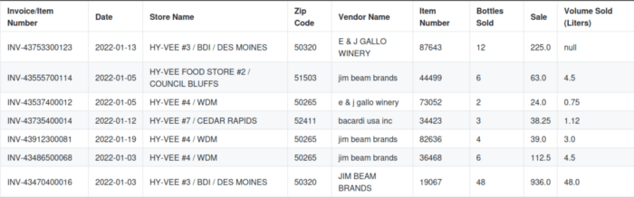
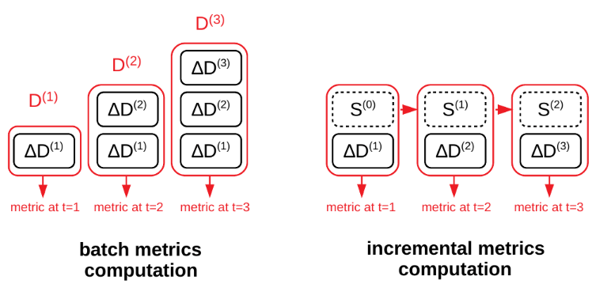

Introduction
In this blog, we will explore how to ensure data quality in a Spark Scala ETL (Extract, Transform, Load) job. To achieve this, we will leverage Deequ, an open-source library, to define and enforce various data quality checks.
If you need a refresher on data quality and its importance in data processing pipelines, you can refer to our previous blog post, “Introduction to Data Quality”. To recap, data quality is essential for accurate data analysis, decision-making, and achieving business objectives. It involves maintaining clean and standardized data that meets expectations. Ensuring data quality requires measuring and testing the data at different stages of the data pipeline. This may include unit testing, functional testing, and integration testing. A few testable properties of data are schema, freshness, quality, and volume which we will focus on in this blog.
To illustrate these concepts, we will use a mock dataset based on the Iowa Liquor Sales Dataset as a running example. The dataset as well as the complete code for this blog can be found in the following GitHub repository.
The rest of the blog is structured as follows:
- Technologies
- Setup
- The Dataset
- Building Schema Checks
- Profiling Your Data
- Adding Data Quality Checks
- Collecting Data Quality Metrics
- Gracefully Handling Data Changes
- Anomaly Detection
- Conclusion
Technologies
Ensuring data quality in Spark can be achieved using various tools and libraries. One notable option is Deequ, an open-source library developed by AWS. It is a simple, but featureful tool that integrates well into AWS Glue or other Spark runtimes. By incorporating Deequ into our pipeline, we can perform schema checks, validate quality constraints, detect anomalies, collect quality metrics for monitoring, and utilize data profiling to gain insights into the properties of our data. Deequ effectively translates high-level rules and metrics into optimized Spark code, using the full potential of your Spark cluster.
Other popular choices for data quality testing are tools like Great Expectations and Soda Core. These tools are rich in features, but also require additional configuration and setup, which may be explored in future blogs. For users already working within an AWS Glue ecosystem, exploring options that are tightly integrated with Glue, such as Deequ, can be more convenient and seamless.
For brevity, we will focus on adding data quality to bare-bones Spark ETL scripts. While the implementation is similar if you are using AWS Glue, we won’t cover it in this blog. Instead, you can find an example glue script in the code repository.
Setup
To begin, you need to have a working Scala development environment. If you don’t, install Java, Scala, and sbt (Scala Build Tool). For Linux x86 the installation would look as follows:
# Install Java (on Debian)
sudo apt install default-jre
# Install Coursier (Scala Version Manager)
curl -fL https://github.com/coursier/coursier/releases/latest/download/cs-x86_64-pc-linux.gz | gzip -d > cs && chmod +x cs && ./cs setup
# Install Scala 2.12 and sbt
cs install scala:2.12.15 && cs install scalac:2.12.15Next, download a compatible Apache Spark distribution (version 3.3.x is recommended) and add the bin folder to your system path. If you can run spark-submit, you are all set.
# Download Spark
curl https://dlcdn.apache.org/spark/spark-3.3.2/spark-3.3.2-bin-hadoop3.tgz --output hadoop.tgz
tar xvf hadoop.tgz
mv spark-3.3.2-bin-hadoop3 /usr/local/spark
# Add the following line to your .bashrc (adds Spark to PATH)
export PATH="$PATH:/usr/local/spark/bin"Sample Script
If you haven’t already, clone the example project and open it in your editor of choice.
git clone git@github.com:EgorDm/deequ-spark-example.gitYou will find an empty example Spark script that reads a CSV file and writes it in parquet format to the output path. It takes the input path, output path and a path for metric storage as command line arguments.
def main(sysArgs: Array[String]): Unit = {
// Parse job arguments
val args = Map(
"input_file_path" -> sysArgs(0),
"output_file_path" -> sysArgs(1),
"metrics_path" -> sysArgs(2)
)
// Read the CSV input file
val rawDf = spark.read
.option("header", "true")
.csv(args("input_file_path"))
logger.info(s"Do some preprocessing")
// Write the result to S3 in Parquet format
rawDf.write
.mode("overwrite")
.parquet(args("output_file_path"))
}Compile the script with the following command, which will output the jar as target/scala-2.12/glue-deequ_2.12-0.1.0.jar.
sbt compile && sbt packageRunning this Spark job is straightforward:
spark-submit \
--class EmptyExample \
./target/scala-2.12/glue-deequ_2.12-0.1.0.jar \
"./data/iowa_liquor_sales_lite/year=2022/iowa_liquor_sales_01.csv" \
"./outputs/sales/iowa_liquor_sales_processed" \
"./outputs/dataquality/iowa_liquor_sales_processed"Include Deequ Library
Since we will be using the Deequ library, it must be added as a dependency to our project. While the library is already included in the project’s dependencies, it is deliberately not bundled into the compiled jar. Instead, you can use the following command to extract it to the target/libs folder, or you can download it yourself from the maven repository.
sbt copyRuntimeDependenciesPass the --jars option to the Spark job, so the library is loaded at runtime:
spark-submit \
--jars ./target/libs/deequ-2.0.3-spark-3.3.jar \
--class ExampleSpark \
./target/scala-2.12/glue-deequ_2.12-0.1.0.jar \
"./data/iowa_liquor_sales_lite/year=2022/iowa_liquor_sales_01.csv" \
"./outputs/sales/iowa_liquor_sales_processed" \
"./outputs/dataquality/iowa_liquor_sales_processed" After running the command, the output parquet files are stored in outputs/sales/iowa_liquor_sales_processed and can be inspected with Spark, Pandas, or data tools like tad.
The Dataset
Now that we have our example ETL script working, let’s take a look at the dataset. The mock dataset is based on the Iowa Liquor Sales dataset, which is simplified and modified to contain various data issues representative of the real world.
The dataset is partitioned by year, where each partition introduces schema and/or distribution changes.
data/iowa_liquor_sales_lite/
year=2020/iowa_liquor_sales_*.csv
year=2021/iowa_liquor_sales_*.csv
year=2022/iowa_liquor_sales_*.csv
Assuming that we have already conducted exploratory data analysis, we will start building our data quality checks by using the 2022 partition and will consider at the end how the other partitions impact our solution.

Preview of Iowa Liquor Sales dataset.Building Schema Checks
The first step is validating the schema of our dataset. A schema defines the structure and organization of the data, including the names and types of columns. By performing schema checks, we can ensure that our data conforms to the expected structure and identify any inconsistencies or missing columns.
To define the schema, we use Deequ’s RowLevelSchema class. Here, each column and its properties are defined using methods like withStringColumn, withIntColumn, withTimestampColumn, or withDecimalColumn. For our dataset, the schema is as follows:
val schema = RowLevelSchema()
.withStringColumn("Invoice/Item Number", isNullable = false)
.withStringColumn("Date", isNullable = false)
.withStringColumn("Store Name", isNullable = false)
.withStringColumn("Zip Code", isNullable = false)
.withStringColumn("Vendor Name", isNullable = false)
.withIntColumn("Item Number", isNullable = false)
.withIntColumn("Bottles Sold", isNullable = false)
.withDecimalColumn("Sale", isNullable = false, precision = 12, scale = 2)
.withDecimalColumn("Volume Sold (Liters)", isNullable = true, precision = 12, scale = 2)After defining the schema, it can be validated against the data (rawDf) using the RowLevelSchemaValidator.validate method.
val schemaResult = RowLevelSchemaValidator.validate(rawDf, schema)
if (schemaResult.numInvalidRows > 0) {
logger.error(
s"Schema validation failed with ${schemaResult.numInvalidRows} invalid rows. Results: ${schemaResult}")
schemaResult.invalidRows.show(10, truncate = false)
sys.exit(1)
}
val validDf = schemaResult.validRowsThe result (schemaResult) contains two Data Frames, specifically the valid rows that conform to the schema and invalid rows that do not. In some cases, data quarantining can be applied by preserving invalid rows and moving forward. Here, we will break and display faulty data in the console instead.
Profiling Your Data
The next step is data profiling, which is an essential step for understanding the characteristics and properties of your dataset. It provides insights into the structure, content, and statistical properties of the data, enabling you to identify potential issues or anomalies, and make informed decisions about data cleansing or transformation.
Deequ provides a convenient way to profile your data using the ConstraintSuggestionRunner. Based on the analyzed data, it collects various statistics and suggests constraints using predefined rules.
ConstraintSuggestionRunner()
.onData(validDf)
.useSparkSession(spark)
.overwritePreviousFiles(true)
.saveConstraintSuggestionsJsonToPath(
s"${args("metrics_path")}/suggestions.json")
.saveColumnProfilesJsonToPath(
s"${args("metrics_path")}/profiles.json")
.addConstraintRules(Rules.DEFAULT)
.run()In the metrics folder, profiles.json is created as output. It contains extracted statistics in a semi-structured format which can be useful for data quality checks creation, as well as, data monitoring.
"columns": [
{
"column": "Vendor Name",
"dataType": "String",
"isDataTypeInferred": "true",
"completeness": 1.0,
"approximateNumDistinctValues": 166
},
{
"column": "Item Number",
"dataType": "Integral",
"isDataTypeInferred": "false",
"completeness": 1.0,
"approximateNumDistinctValues": 1469,
"mean": 59981.83674981477,
"maximum": 995530.0,
"minimum": 567.0,
"sum": 2.42866457E8,
"stdDev": 104855.01628803412,
"approxPercentiles": []
},
{
"column": "Volume Sold (Liters)",
"dataType": "Fractional",
"isDataTypeInferred": "false",
"completeness": 0.8992343788589775,
"approximateNumDistinctValues": 97,
"mean": 11.238700906344382,
"maximum": 1512.0,
"minimum": 0.05,
"sum": 40920.1099999999,
"stdDev": 40.87384345937876,
"approxPercentiles": []
},
...The suggestions.json includes a list with some basic data quality rule suggestions based on the profiled metrics. Some suggestions are more useful than others. I have noticed that sometimes columns with medium cardinality are mistaken for categorical variables, suggesting value constraints. Having tight checks is valuable, but be wary of overfitting your tests.
"constraint_suggestions": [
{
...
"column_name": "Invoice/Item Number",
"current_value": "Completeness: 1.0",
"rule_description": "If a column is complete in the sample, we suggest a NOT NULL constraint",
"code_for_constraint": ".isComplete(\"Invoice/Item Number\")"
},
{
...
"column_name": "Volume Sold (Liters)",
"current_value": "Minimum: 0.05",
"rule_description": "If we see only non-negative numbers in a column, we suggest a corresponding constraint",
"code_for_constraint": ".isNonNegative(\"Volume Sold (Liters)\")"
},Adding Data Quality Checks
Now we have identified expectations for our data, we will write the data quality checks to help us identify and address any issues or inconsistencies present in the dataset.
The checks are defined in groups with associated description and severity. Under the hood, the checks are translated to metric calculations and predicates that indicate success or failure based on the result of said metric.
The checks address different types of issues and may operate on both column and dataset level. See this file for an overview of all the supported checks. If you can’t find the right check, a custom check can be written in Spark SQL with the satisfies() method.
Here is an example set of data quality checks that are relevant to our business case.
val checks = Seq(
Check(CheckLevel.Error, "Sales base checks")
.hasSize(_ >= 0, Some("Dataset should not be empty"))
.isComplete("Invoice/Item Number")
.isComplete("Date")
.isComplete("Store Name")
.isComplete("Zip Code")
.isComplete("Vendor Name")
.isComplete("Item Number")
.isComplete("Bottles Sold")
.isComplete("Sale")
.isUnique("Invoice/Item Number")
.hasPattern("Invoice/Item Number", "^INV-[0-9]{11}$".r)
.hasPattern("Date", "^[0-9]{4}-[0-9]{2}-[0-9]{2}$".r)
.hasPattern("Zip Code", "^[0-9]{5}$".r)
.isNonNegative("`Bottles Sold`")
.isNonNegative("`Sale`")
.isNonNegative("`Volume Sold (Liters)`")
)The data quality, checks can be executed using the VerificationSuite:
var verificationSuite = VerificationSuite()
.onData(validDf)
.useSparkSession(spark)
.overwritePreviousFiles(true)
.saveCheckResultsJsonToPath(s"${args("metrics_path")}/checks.json")
.addChecks(checks)
val verificationResult = verificationSuite.run()
if (verificationResult.status == CheckStatus.Error) {
logger.error(s"Data quality checks failed. Results: ${verificationResult.checkResults}")
sys.exit(1)
}Running the checks as is, will result in a failure. The generated report (e.g., checks.json) generally provides enough information to determine which check fail and why. By examining the report, we see the following error, implying that ~1.1% of our zip codes don’t follow the five-digit format.
...
{
"check_status": "Error",
"check_level": "Error",
"constraint_status": "Failure",
"check": "Validity checks",
"constraint_message": "Value: 0.9898740429735737 does not meet the constraint requirement!",
"constraint": "PatternMatchConstraint(Zip Code, ^[0-9]{5}$)"
},
...This is in fact correct, as the zip code column in the dataset may contain some straggling characters. This can be fixed by either reducing the check sensitivity or addressing the issues before the checks are run:
val validDf = schemaResult.validRows
.withColumn("Zip Code", F.regexp_extract(F.col("Zip Code"), "[0-9]{5}", 0))Collecting Data Quality Metrics
Metrics provide valuable insights into the health and quality of our data. They can help us see trends, make improvements, and find anomalies in our data. Some metrics are necessary for configured checks and are computed automatically, while others may be needed for external systems such as monitoring dashboards or data catalogs and need to be specified manually.
These additional metrics, need to be added manually as analyzers:
private def numericMetrics(column: String): Seq[Analyzer[_, Metric[_]]] = {
Seq(
Minimum(column),
Maximum(column),
Mean(column),
StandardDeviation(column),
ApproxQuantile(column, 0.5)
)
}
private def categoricalMetrics(column: String): Seq[Analyzer[_, Metric[_]]] = {
Seq(
CountDistinct(column),
)
}Below, we create analyzers to generically compute the distribution of numeric columns.
val analysers = (
numericMetrics("Bottles Sold")
++ numericMetrics("Sale")
++ numericMetrics("Volume Sold (Liters)")
++ categoricalMetrics("Store Name")
++ categoricalMetrics("Vendor Name")
++ Seq(
Completeness("Bottles Sold"),
)
)Similar to quality checks, the metrics are computed using the VerificationSuite.run() method:
var verificationSuite = VerificationSuite()
...
.saveSuccessMetricsJsonToPath(s"${args("metrics_path")}/metrics.json")
.addRequiredAnalyzers(analysers)
...The collected metrics are written to metrics.json file, which can be loaded by external tools. Alternatively, Deequ defines a concept of metric repositories as an interface for saving the metrics to other systems in a generic manner. You can write your own repository to store the metrics in, for example, Prometheus or AWS Cloud Watch.
Another useful feature is KLL Sketches which supports, approximate, but highly accurate metric calculation on data by sampling.
Incremental Computation of Metrics
In the realm of ETL workloads, it is rare for data engineers to reprocess the entire dataset. Typically, pipelines are designed to be incremental, processing only new data. However, if your data quality checks rely on metrics computed over the entire dataset, this can lead to a continuous increase in load on your Spark cluster.

Instead of repeatedly running the batch computation on growing input data D, incremental computation is supported hat only needs (t) to consume the latest dataset delta ∆D and a state S of the computation. Source: technical paper.To address this challenge, Deequ introduces a concept of “Algebraic states.” These states store calculated metrics and the corresponding data, enabling their aggregation across multiple pipeline runs. Consequently, only the incremental data needs to be processed, significantly reducing the computational burden.
We demonstrate this by adding complete dataset checks within our incremental ETL script. The first step is to record incremental metrics in a temporary in-memory state provider:
val incrementalStateProvider = InMemoryStateProvider()
val verificationResult = VerificationSuite()
...
.saveStatesWith(incrementalStateProvider)
...To load the aggregated state from a persistent provider, a persistent state provider is needed. Additionally, we check if the state already exists to determine whether it should be included in the aggregation, specifically necessary for first pipeline run:
// Initialize state for incremental metric computation
val completeStatePath = s"${args("metrics_path")}/state_repository/"
val completeStateProvider = HdfsStateProvider(spark, s"${completeStatePath}/state.json", allowOverwrite = true)
// Determine if the complete state already exists
val fs = FileSystem.get(spark.sparkContext.hadoopConfiguration)
val aggregateStates = try {
fs.listFiles(new Path(completeStatePath), false).hasNext
} catch {
case _: FileNotFoundException => false
}Now, once again, we can run VerificationSuite, but this time we use the providers to load state data. Consequently, the checks and metrics are computed and merged over the aggregated state, which, in this case, represents the complete dataset:
// Merge incremental metrics with complete metrics, and run data quality checks
val completeChecks = Seq(
Check(CheckLevel.Error, "Sales complete checks")
.hasSize(_ >= 0, Some("Dataset should not be empty"))
)
logger.info("Running complete dataset checks")
val completeVerificationResult = VerificationSuite.runOnAggregatedStates(
validDf.schema,
completeChecks,
if (aggregateStates) Seq(completeStateProvider, incrementalStateProvider)
else Seq(incrementalStateProvider),
saveStatesWith = Some(completeStateProvider)
)
if (completeVerificationResult.status == CheckStatus.Error) {
logger.error(s"Complete data quality checks failed. Results: ${completeVerificationResult.checkResults}")
sys.exit(1)
}This feature provides granular control over metric computation and therefore supports a multitude of implementations. For instance, you may choose to save the state only when the entire pipeline succeeds, or you may want to perform anomaly detection on the complete dataset.
Gracefully Handling Data Changes
When working with external data sources, it’s common for changes to occur, which can lead to failed checks if not properly handled. To ensure backward compatibility and smooth data processing, there are two options you can consider:
Filterable Constraint Checks: these are conditional checks that are only executed if a specific condition is satisfied, such as when the input data is from an older dataset version. This allows you to accommodate changes in the data structure while still maintaining compatibility.
val checks = Seq(
Check(CheckLevel.Error, "Sales base checks")
...,
Check(CheckLevel.Error, "Legacy checks")
.hasPattern("Date", "^[0-9]{2}/[0-9]{2}/[0-9]{4}$".r)
.where("year < 2022")
)Splitting by Data Version: Unfortunately, conditional checks are not applicable for schema checks. Cases such as column addition or deletion need to be addressed separately. In such cases, it’s recommended to keep your data versions close at hand and use them as a discriminator to run various checks for different versions. Splitting by version enables you to have granular control over the checks while still keeping the code reusability.
Anomaly Detection
Anomaly detection is a crucial aspect of data quality testing that helps identify unexpected or unusual patterns in the data based on historical observations. Deequ provides several anomaly detection strategies that can be applied to different aspects of the data.
Before applying anomaly detection, it is important to store the metrics in a persistent repository. This ensures that historical metrics are available for comparison and trend analysis. In the code snippet below, we use a FileSystemMetricsRepository to store the metrics in a file system location:
val metricsRepository: MetricsRepository =
FileSystemMetricsRepository(spark, s"${args("metrics_path")}/metrics_repository.json")
var verificationSuite = VerificationSuite()
...
.useRepository(metricsRepository)
...Once at least one data point is collected and stored in the metrics repository, we can apply anomaly detection strategies.
One useful application of anomaly detection is keeping the data volume in check. If your dataset is expected to grow at a predictable pace or remain stationary, you can add anomaly detection on the row count. This helps identify unexpected changes introduced by external systems or transformation scripts.
var verificationSuite = VerificationSuite()
...
.addAnomalyCheck(
RelativeRateOfChangeStrategy(maxRateIncrease = Some(2.0)),
Size(),
Some(AnomalyCheckConfig(
CheckLevel.Warning,
"Dataset doubling or halving is anomalous"
))
)
...Similarly, anomaly detection can be applied to specific columns where you have knowledge about the expected distribution or behavior of the data.
When an anomaly is found, you have the option to handle it based on the severity of the issue. If the anomaly is critical, you can stop the pipeline to avoid propagating the issue further, or if the anomaly is not severe, you can emit a warning to your monitoring systems for further investigation.
By incorporating anomaly detection into your data quality checks, you can proactively identify and address unexpected or unusual patterns in your data, ensuring the overall quality and reliability of your data pipelines.
Conclusion
In this blog, we have set up a data quality checking solution for our Spark ETL pipeline by incorporating the open-source library Deequ. We have covered how one can use Deequ for schema checking, data profiling, quality constraints testing, quality metric collection, and anomaly detection.
If you prefer writing scripts in Python (i.e., PySpark), then PyDeequ may be of help, which is a Python library for Deequ. At the time of writing this blog, this library is a bit behind and doesn’t yet support some features we have discussed.
Check out the previous blog “Introduction to Data Quality” if you haven’t yet, which may give you ideas on how to implement your data quality checks.
More Resources
- Test data quality at scale with Deequ | AWS Big Data Blog
- Building a serverless data quality and analysis framework with Deequ and AWS Glue | AWS Big Data Blog
- Automating Large-Scale Data Quality Verification - Original Deequ Technical Paper
- AWS is currently building an integrated solution for data quality checking in AWS Glue. It still lacks many features of Deequ, but it is worth keeping an eye on this one as it is in active development.
- See more examples on Deequ GitHub page